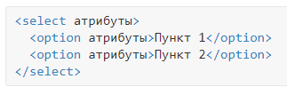
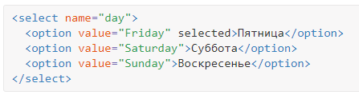
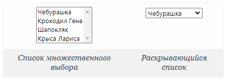
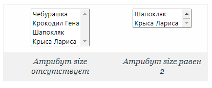
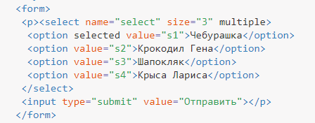
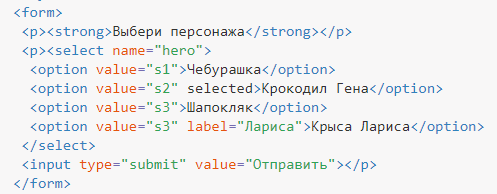
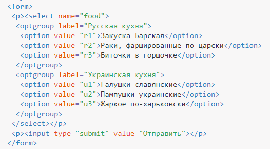

Поле со списком
Поле со списком, называемое ещё выпадающее меню, один из гибких и удобных элементов формы. Выпадающие списки являются идеальным способом, чтобы практическим образом предоставить пользователям длинный список вариантов. Длинный столбец переключателей рядом со списком разных вариантов не только визуально непривлекателен, но кроме того сложен и труден для понимания, особенно на мобильном устройстве. Выпадающие списки, с другой стороны, обеспечивают идеальный формат для длинного списка вариантов.
В зависимости от настроек в списке можно выбирать одно или несколько значений. Преимущество списка в его компактности и универсальности, список может занимать одну или несколько строк, в нём можно выбирать одно или несколько значений.
Для создания выпадающего списка мы будем применять элементы <select> и <option>. Элемент <select> оборачивает все пункты меню, а каждый пункт меню размечен с помощью элемента <option>.

Атрибут name располагается в элементе <select>, а атрибут value располагается в элементах <option>, вложенных в элемент <select>. Таким образом, атрибут value в каждом элементе <option> связан с атрибутом name элемента <select>.
Каждый элемент <option> оборачивает текст (который виден пользователям) отдельного пункта в списке.
Подобно логическому атрибуту checked у переключателей и флажков, для выпадающего меню можно использовать логический атрибут selected, чтобы предварительно выделить пункт для пользователей.
Демонстрация выпадающего списка

Элемент <select> выступает контейнером для пунктов списка и определяет его вид — будет ли это раскрывающийся список или же список с одним или множественным выбором. Вид зависит от использования атрибута size элемента <select>, который устанавливает высоту списка; ширина списка при этом определяется автоматически исходя из длины текста внутри <option>. Ниже представлен список множественного выбора, в котором пункты выделяются с помощью клавиши Ctrl и Shift, и раскрывающийся список.

Поскольку список формируется двумя элементами <select> и <option>, соответственно, у каждого этого элемента свои атрибуты.
Атрибуты элемента
| Атрибут | Описание |
|---|---|
| name | Имя списка для идентификации поля. |
| disabled | Блокирует список для выбора. |
| form | Идентификатор формы для связывания поля с элементом <form>. |
| size | Число пунктов списка, показываемых пользователю. |
| multiple | Позволяет выбрать несколько пунктов из списка. При наличии этого атрибута вид списка меняется, превращаясь в список множественного выбора. |
| autofocus | Элемент получает фокус после загрузки документа. |
| required | Перед отправкой формы обязательно следует выбрать пункт списка. |
Кроме того, есть ряд правил:
- <select> нельзя вкладывать внутрь ссылок;
- <select> нельзя вкладывать внутрь кнопок <button>;
- внутри <select> должен быть хотя бы один элемент <option>.
Рассмотрим подробнее некоторые атрибуты <select>, с помощью которых можно изменять представление списка.
multiple
Наличие multiple сообщает браузеру отображать содержимое элемента <select>, как список множественного выбора. Конечный вид списка зависит от используемого атрибута size. Если он отсутствует, то высота списка равна количеству пунктов. Если значение size меньше числа пунктов, то появляется вертикальная полоса прокрутки.

Для выбора нескольких значений списка применяются клавиши Ctrl и Shift совместно с курсором мыши. Надо понимать, что если вам требуется выделить сразу несколько пунктов списка через атрибут selected, то для <select> следует добавить атрибут multiple, иначе это всё работать не будет.
В примере 1 показано создание списка множественного выбора.
Пример 1. Список множественного выбора

name
Определяет уникальное имя элемента <select>. Как правило, это имя используется для доступа к данным через скрипты или для получения выбранного значения серверным обработчиком.
size
Устанавливает высоту списка. Если значение size равно единице, то список превращается в раскрывающийся. Значение по умолчанию зависит от атрибута multiple. Если он присутствует, то размер списка равен числу элементов. Когда multiple нет, то значение атрибута size равно 1.
Атрибуты элемента
| Атрибут | Описание |
|---|---|
| disabled | Блокирует пункт списка для выбора. |
| selected | Позволяет заранее выбрать пункт списка. |
| label | Текст, который отображается в пункте списка. |
| value | Значение выбранного пункта списка, отправляемого на сервер. |
selected
Делает текущий пункт списка выделенным. Если к <select> добавлен атрибут multiple, то можно выделять более одного пункта.
value
Определяет значение пункта списка, которое будет отправлено на сервер в виде пары «имя=значение», где имя задаётся атрибутом name элемента <select>, а значение — атрибутом value выделенных пунктов списка. Значение может как совпадать с текстом пункта, так быть и самостоятельным.
label
Предназначен для указания метки пункта списка, сокращённой по сравнению с текстом внутри <option>. Если атрибут label присутствует, то текст внутри тега <option> игнорируется и в списке выводится значение label. Браузер Firefox не поддерживает этот атрибут.
Создание списка показано в примере 2.
Пример 2. Использование списка

Группирование элементов списка
При достаточно обширном списке имеет смысл сгруппировать его элементы по блокам, чтобы обеспечить наглядность списка и удобство работы с ним. Для этой цели применяется элемент <optgroup>. Он представляет собой контейнер, внутри которого располагаются элементы <option>, объединённые в одну группу.
Особенностью <optgroup> является то, что он не выделяется, как обычный элемент списка, выводится жирным начертанием, а все элементы, входящие в этот контейнер, смещаются вправо от своего исходного положения. Для добавления заголовка группы используется атрибут label, как показано в примере 2.
Пример 2. Группирование элементов списка
